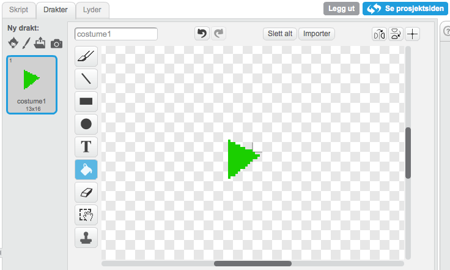

Sjekkliste
Lag to nye lister (for alle figurer). Kall en av dem
instrumentog den andretiming.Lag en ny variabel (for alle figurer) som heter
opptakFor hvert av instrumentene (tromme, piano, hver lyd etc.), må du legge til følgende i
når jeg mottarklossen.blocks hvis <(opptak) = (1)> legg (timer) til [timing v] legg (cat) til [instrument v] --- Endre ordet “cat” in `legg [cat] til [instrument v]`{.blockred} slik at det stemmer med navnet til meldingen som brukes for å spille denne lyden.blocks når jeg mottar [drum v] trommeslag (48 v) som varer (0.2) takter hvis <(opptak) = (1)> legg (timer) til [timing v] legg (cat) til [instrument v] slutt sett størrelse til (110) % vent (0.1) sekunder sett størrelse til (100) % —Tegn en ny figur og gi den en rød sirkeldrakt. Gi denne figuren navnet “Opptak”.

Lag et skript som setter
opptaktil 1 og sletter alleinstrumentogtimingnår man trykker på det.
Test prosjektet
Prøv å trykk på opptaksknappen. Hva skjer når du spiller på instrumentene?
Lag en ny figur og lag en drakt som ser ut som en grønn pil. Kall denne “Spill av”. 
Lag en ny variabel som du kaller
index.Nå må vi få avspillingen til å gjøre noe. Legg dette skriptet til “Spill av” ```blocks når denne figuren klikkes sett [recording v] til (0) sett [index v] til (1) nullstill klokka for alltid hvis <(element (index) av [timing v]) < (timer)> send melding (element (index) av [instrument v]) endre [index v] med (1) hvis <(index) > (lengden av [timing v])> stopp [dette skriptet] slutt slutt slutt —
Test prosjektet
Trykk på den grønne play knappen. Hva skjer?
Trykk på den røde knappen og spill på noen intrumenter. Etter at du er ferdig, trykk på den grønne play knappen igjen. Hva skjer?
Spill på flere instrumenter uten å trykke på record. Trykk så på den grønne play knappen igjen. Hva skjer?